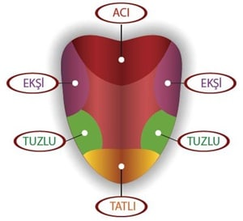

2.ÜNİTE
DUYU ORGANLARIMIZ VE SAĞLIĞI
İnsanların vücudunda beş farklı duyu organı vardır.
Beş adet duyu organımızın isimleri:
- Göz
- Kulak
- Dİl
- Burun
- Deri
GÖZ
Göz ve görevleri:
Gözlerimiz çevremizi görmemizi sağlayan duyu organlarımızdır. Varlıkların şeklini, büyüklüğünü, rengini ve yerini gözlerimizle algılarız. En hassas organlarımızdan olan gözlerimiz göz çukurunda bulunur. Böylece darbelere karşı korunmuş olur.
Göz Sağlığını Korumak İçin;
- Başkalarına ait havlu ve gözlükleri kullanmamalıyız.
- Kirli ellerle gözlerimize dokunmamalıyız.
- Çok yakından televizyon izlememeliyiz.
- Bilgisayar karşısında uzun süre durmamalıyız.
- Güneş’e çıplak gözle bakmamalıyız.
- Havuç , balık ve portakal gibi göz sağlığımıza iyi gelen yiyecekleri de bolca tüketmeliyiz.
BURUN
Burun ve Görevleri
Burnumuz yardımıyla çevremizdeki farklı kokuları alabiliriz. Ocakta kaynayan yemeği, çiçeği, denizi ve daha pek çok varlığı kokusundan ayırt edebiliriz.
Grip olup burnumuz tıkalı olduğu durumlarda tattığımız yiyeceklerden yeterince lezzet alamayız. Bunun sebebi tat alma duyumuzun koku alma duyumuzla beraber çalışmasıdır.
Burnumuz aynı zamanda solunum organımızdır.
Burun Sağlığını Korumak İçin;
- Tozlu ve havasız ortamlarda bulunmamalıyız.
- Burnumuzu temiz tutmalıyız.
- Ne olduğunu bilmediğimiz maddeleri koklamamalıyız.
- Burun kıllarımızı koparmamalıyız.
- Burnumuza keskin ve sivri cisimleri sokmamalıyız.
- Burun kanamalarında burun deliklerinin üst kısmını hafifçe sıkmalıyız.
- Sigara içilen ortamlarda bulunmamalıyız.
KULAK
Kulak ve Görevleri
Çevremizdeki insanların, hayvanların, eşyaların ve pek çok varlığın çıkardığı sesleri kulaklarımız ile algılarız. Kulaklarımızın dışarıdan görünen bölümüne kulak kepçesi denir.
Kulaklarımız sayesinde sesin yönünü, şiddetini, uzaklığını anlarız.
Kulak Sağlığını Korumak İçin;
- Gürültülü ortamlardan uzak durmalıyız.
- Yüksek sesle ve uzun süre kulaklıkla müzik dinlememeliyiz.
- Kulaklarımızı temiz tutmalıyız.
- Kulaklarımızı sert ve sivri cisimler sokmamalıyız.
- Kulaklarımızı soğuktan korumalıyız.
- Şiddetli sesler duyduğumuzda ağzımızı açmalıyız.
- Kulağımızda ağrı, akıntı olduğunda veya işitme kaybı hissettiğimizde mutlaka doktoragörünmeliyiz.
DİL
Dil ve Görevleri
Dilin görevi 2 tanedir. Hem tat alma hem de konuşmamıza işe yarar. Dilimiz sayesinde birbirinden farklı tatları ayırt edebiliriz.

Dilimiz üzerinde tat almaya yarayan tomurcuklar vardır. Bunlar; yediğimiz besinlerin acı, tatlı, ekşi veya tuzlu olduğunu bize hissettirir. Dilimizin ucu tatlı, ucun hemen arkası tuzlu, dilin yanları ekşi ve arkası da acı tatlara duyarlıdır.
Dil Sağlığını Korumak İçin;
- Ağız ve diş temizliğimize dikkat etmeliyiz.
- Çok soğuk ve çok sıcak gıdalar tüketmemeliyiz.
- Asitli ve gazlı içecekleri tüketmemeliyiz.
- Kesinlikle alkol ve sigaradan uzak durmalıyız.
- Ne olduğunu bilmediğimiz maddelerin tadına bakmamalıyız.
- Dilimizde kızarıklık, şişlik veya yara olması durumunda en kısa zamanda doktora gitmeliyiz
DERİ
Deri ve Görevleri
Derimiz sayesinde nesnelerin sıcak, soğuk, sert, yumuşak, pürüzlü, pürüzsüz olduklarını onlara dokunarak anlarız.
Derimiz vücudumuzu koruyucu bir örtü gibi kaplar. Derimizin dokunma ve hissetme dışında da birçok görevi vardır. Bunlardan bazıları terleme, vücudumuzu dış darbelere karşı koruması, mikropların vücuda girmesini önleme, su kaybını önleme, bizi Güneş’in zararlı etkilerinden korumadır.
Deri Sağlığını Korumak İçin;
- Düzenli olarak banyo yapmalıyız.
- Vücudumuzu aşırı sıcak ve soğuktan korumaya çalışmalıyız.
- Kesici ve delici aletlerle oyun oynamamalıyız.
- Kimyasal maddeler ile temasta bulunmamalıyız.
- Güneş’in zararlı ışınlarından korunmalıyız
- Derimizde şişlik, kızarıklık, yara, kaşıntı gibi durumlar olduğunda cilt doktoruna gidip muayene olmalıyız.